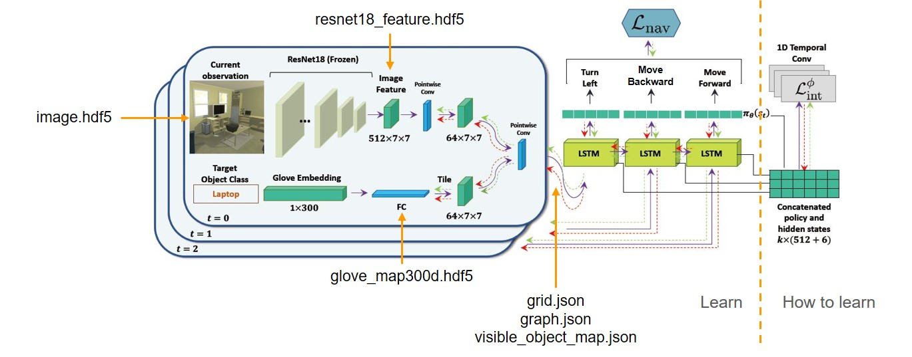

Perception in Robotics Project
Object Navigation in AI2-THOR by SAVN
Project Goal: Train the agent to find objects, and then navigate the agent in known or unknown environments to search known or unknown objects.
Abstract
In this project, we demonstrate that the self-adaptive visual navigation (SAVN) model makes the agent conduct visual navigation successfully even when searching for unknown objects in unknown environments. Based on the meta-reinforcement learning architecture, such a model builds up the network to learn how to tune the weightings by itself. The result shows that SAVN outperforms the random-walking method both in success rate (SR) and success weighted by inverse path length (SPL). Index Terms—Visual Navigation, Meta Learning
Introduction

Fig. 1. Comparison between traditional method and SAVN
Our project goal is to ask an agent to navigate in both known and unknown environments to search for both known and unknown objects. Here, the term ”known” means our agent has been trained with that dataset before. We have to apply the provided information: object positions, reachable positions, and images of states to accomplish the task in the Ai2THOR simulator. Notice that apart from the above data, the coordinator also provides depth information, ResNet-50 features, ResNet-50 classification score and segmentation that we don't use in our approach, because we want to maintain the original architecture of the algorithm mentioned below.
We have to consider the following question before deciding our research direction. How do we learn new tasks in our daily life? Based on the experience, we adapt ourselves to an unknown environment by interacting with our surroundings to gain information and evaluate the condition. Actually, it is a series of observations and reactions. This fact contrasts with most current learning strategies whose networks are frozen already after training. Traditional methods deal with such a problem by feeding information as much as possible. However, the limitation of computation ability prevent models from learning all kinds of datasets. You can expect a child to recognize an ostrich as a bird, but the model who has never seen it before may classify an ostrich into mammals.
In visual navigation, adaptation is possible without access to a reward function or positive example. As the agent trains, it learns self-supervised losses that facilitate effective navigation. During learning, we encourage the gradient obtained from the self-supervised loss to be similar to the gradient obtained from the supervised navigation loss. Thus, the agents can adapt during inference when explicit supervision is not available.
What if we create a model which can adapt itself to unfamiliar environments? Instead of training a solid model which learns how to navigate directly without flexibility, a proper way may be to train a model which knows how to tune the weightings of the above one. In this project, we solve the problem by applying the self-adaptive visual navigation (SAVN) model based on meta-reinforcement learning. Simply speaking, agents learn how to modify their network while conducting navigation during the training. They detect features through observation and generate a sequence of states leading to targets. To demonstrate SAVN has better performance, we compare our result with the random-walking method in success rate (SR) and success weighted by inverse path length (SPL) and show the comparison by animations in the end.
Fig 2. Model Architecture